做一個你想用的功能 想讓搜尋更好用，或加一個常用的按鈕？跟著這 12 關，把點子說給 AI 聽，做出一個可以親手試的小版本。
說清楚想改什麼 用 AI 做出一小版 親手測試 交給團隊審查 用電腦開啟 Codex，就可以先從空資料夾練習。最後帶上你自己的點子，和 Kevin 及隊友一起看怎麼加進團隊系統。
開始第 1 關 卡在一個名詞？翻小字典 想到哪個就查哪個。可以打中文，也可以直接貼上看到的英文字。
查名詞 回到剛才的關卡
AI 助手（Codex／Claude） 可以先把 AI 當成一位搭檔。Codex 可以照你的要求讀程式、試改和跑測試。Claude 可以先畫給你看，也能幫忙找漏掉的地方。舉個例子： 你說「搜尋前後有空白也要找得到」，再親手確認結果。
專案（Project） 做一個工具需要的程式、資料和說明，放在同一個地方。舉個例子： 第 1 關你自己建的 ai-practice，就是放這次練習檔案的地方。
Node.js／LTS 這門課要用 Node.js 在你的電腦上跑搜尋練習和檢查。裝好後，Codex 才能幫你跑這份練習的測試，告訴你改完有沒有修好。純聊天、寫工單或看教材時，還用不到它。舉個例子： 搜尋「入門」前後多了空白，本來找不到課程。修好後，請 Codex 用 Node.js 再跑一次，看同一筆輸入能不能找到「程式入門」。下載頁的 LTS 是長期支援版。團隊專案有指定版本時，就照專案說明安裝。
終端機（Terminal／PowerShell） 可以用打字叫電腦做事的視窗。Windows 的 PowerShell 就是其中一種。舉個例子： 輸入 node --version，是請電腦告訴你裝了哪個版本。
Git／GitHub Git 幫你記錄程式改了哪裡。GitHub 是團隊放程式、討論改動和請人審查的網站。舉個例子： 在自己電腦存一筆 Git 紀錄。等對方確認可以送出，再放到 GitHub。
程式庫（Repository／Repo） 一個專案的檔案和修改紀錄放在一起的地方。舉個例子： Kevin 傳來的 GitHub 練習專案連結，通常會帶你到 repo。
工單（Issue） 一張寫清楚想改什麼、怎麼重現和怎樣算做好的工作單。舉個例子： 「貼上前後有空白的『入門』也要找到課程」比「搜尋怪怪的」好懂。
分支（Branch／main） 分支是從某一版開出來的工作線。團隊常把主要版本叫 main。舉個例子： 把搜尋修改放在這張工單的分支上，團隊可以先看過。
存一版（Commit） 把這次挑好的改動存成一筆版本紀錄，順便寫一句改了什麼。舉個例子： 例如「讓搜尋忽略前後空白」。之後能找到這次改過哪些檔案。
送到 GitHub（Push） 把你電腦上的版本紀錄送到 GitHub，讓隊友也看得到。舉個例子： 先確認要送到哪個專案和分支，再依團隊授權送出。
審查頁（Pull Request／PR／Draft PR） PR 是給隊友看這批改動的頁面。Draft PR 還在準備中。舉個例子： 你可以放工單、測試結果和畫面，請 IT 幫忙看空查詢的結果。
合併／部署（Merge／Deploy） 合併是把通過審查的改動接回團隊的版本。部署是把某個版本送到大家實際使用的環境。舉個例子： 團隊把修改合進主版本後，會依流程決定何時讓使用者用到。
測試／自動檢查（Test／CI） 測試是照一個方法確認結果。CI 可以在 GitHub 自動跑團隊設定的檢查。舉個例子： 先用同一個輸入試兩次。一開始找不到課程，修完後找得到。
重現／驗收 重現是照相同步驟再看一次問題。驗收是依約好的結果親手試，確認這次做對了。舉個例子： 一開始先搜帶空白的『入門』，修完後再用同一個輸入檢查。
README 專案附的使用說明，通常會寫怎麼開起來、怎麼試。舉個例子： 關掉練習工具，再照 README 自己打開一次。
AI 分工（Agent） 把不同工作分給不同的 AI，說清楚各自要看什麼、交什麼、何時停。舉個例子： Codex 改檔，Claude 只看差異、找漏測的地方，最後由你確認。 看四段闖關路線 第一段｜讓 AI 聽懂你 1 關 打開 Codex，找到練習資料夾2 關 把工作方式告訴 Codex3 關 · 大魔王 先看一次搜尋為什麼失敗第二段｜修好第一個問題 4 關 寫一張隊友看得懂的工單5 關 開一個分支，放心試改6 關 · 大魔王 只改一處，看搜尋結果回來第三段｜把修改交給隊友 7 關 自己試一次，再把這一版存好8 關 開一張審查草稿9 關 · 大魔王 請 IT 幫忙看一個重點第四段｜做出自己的小功能 10 關 先量一次，再決定值不值得改11 關 從空資料夾做出一個小工具12 關 · 大魔王 把自己的點子加進剛做的工具第 1 關 / 12 · 開工 打開 Codex，找到練習資料夾 小魔王 · 迷路怪 先找到練習的地方。你會在這個空資料夾裡讓 Codex 做第一道小題。
查小字典 · Codex 在自己電腦的「文件」裡，新建一個叫 ai-practice 的空資料夾。等一下用 Codex 開它。
建立或找到 ai-practice 用 Codex 開啟這個資料夾 貼一句話，核對資料夾名稱 看準備與安裝教學 Codex 耳機｜先登入，再打開資料夾 為什麼要準備？ 讓 Codex 在正確的地方陪你試。先確認開的是練習資料夾，之後才請它看程式或動手改。
哪一關會用到？ 第 1 關，第一次打開練習資料夾。
打開 Codex 桌面 App，用團隊允許的帳號登入。 切到 Codex，Windows 按 Ctrl + O，Mac 按 Command + O，再選「文件」裡的 ai-practice。 怎麼知道準備好了？ 你已登入可使用的帳號，Codex 說的資料夾名稱也跟你剛開的一樣。
桌面 App 官方說明
可以用已登入的 Codex 請它協助。如果目前還登入不了，先從下方官方說明開始，或請 Kevin 帶你開起來。
請 Codex 帶我準備 Codex（貼給 Codex） 複製給 Codex
看完整內容 請一次一步帶我確認 Codex 已登入可使用的帳號，且開的是我剛建立的空資料夾 ai-practice。每一步先說我要按哪裡、會看到什麼，等我回覆再繼續。登入由我自己在官方畫面操作。如果我還打不開 Codex，請指引我看官方桌面 App 說明，或請 Kevin 協助。 Git 工具包｜用來存每次修改 為什麼要準備？ Git 像修改紀錄簿。你可以先存一版，再在自己的工作版本試改，之後也找得到改過什麼。
哪一關會用到？ 第 3 關先存搜尋練習的起始版本，第 5 關開分支時還會用到。
Windows 到 Git 官網下載安裝程式。公司電腦需要安裝權限時，請 Kevin 或 IT 協助。 裝完後重新開 PowerShell，輸入 git --version。也可以請 Codex 幫你檢查。 怎麼知道準備好了？ 看到 git version 和版本號，表示 Git 可以用。第 3 關第一次存版本時，再由 Codex 檢查這份練習的提交姓名。
Git for Windows 官方下載
可以請 Codex 先檢查，再協助安裝 Git 和設定這個練習專案的提交姓名。
請 Codex 帶我準備 Git（貼給 Codex） 複製給 Codex
看完整內容 先幫我跑 git --version，確認 Git 能不能用。需要安裝時，請依我的作業系統用 Git 官網建議的方式協助，先說明要做什麼。遇到安裝畫面或需要 IT 權限，請一次帶我做一步。完成後請重新開終端機驗證 git --version。若練習專案缺少提交姓名或電子郵件，請告訴我填在哪裡，並只在我確認後設定這個練習專案。 Node.js 電池｜讓 Codex 跑搜尋練習 為什麼要準備？ 這門課用 Node.js 跑搜尋練習。Codex 才能拿同一句話測兩次，讓你看到問題修好前後的差別。
哪一關會用到？ 第 3 關第一次跑搜尋測試，第 6 關修好後再跑一次。
先問 Kevin 這個專案要用哪一版 Node.js。單純做課堂練習時，可以從 Node.js 官網選 LTS 的 Windows 安裝程式。 裝完後重新開 PowerShell，輸入 node --version。若還是找不到，重開 Codex 或請 Kevin 一起看。 怎麼知道準備好了？ 先看到 v 開頭的版本號，表示電腦找得到 Node.js。到了搜尋關，再請 Codex 跑一次測試，就能看到修改前後的結果。
Node.js 官方下載
不知道怎麼裝？可以請 Codex 幫忙。公司電腦若需要管理員權限，請 Kevin 或 IT 協助。
請 Codex 幫我裝 Node.js（貼給 Codex） 複製給 Codex
看完整內容 請先在目前這台電腦檢查 node --version。如果已經裝好，而且版本符合這個專案的說明，直接告訴我結果。如果需要安裝，先幫我確認這個專案要用哪一版。單純做課堂練習、沒有指定版本時，可以用 Node.js 官網的長期支援版（LTS）。請說明打算怎麼裝，再協助我安裝。如果需要我點選安裝畫面或找 IT 開權限，請一次帶我做一步。裝好後請在新開的終端機再跑一次 node --version，把結果用白話告訴我。 GitHub 通行證｜走到送審再用 為什麼要準備？ GitHub 是團隊放程式和討論修改的地方。你想把修改交給隊友看時，會在這裡開一張審查草稿。
哪一關會用到？ 第 8 關要練真的把草稿送到 GitHub 時才需要。只在本機寫草稿，也能完成這關。
已有團隊帳號就直接登入。需要新帳號時，到 GitHub 註冊，並到信箱完成驗證。公司提供的受管理帳號，依公司流程辦理。 接受組織或練習專案的邀請，再打開 Kevin 給你的連結。可以看專案後，請 Kevin 核對你是否能開工單、推分支和開 PR。 怎麼知道準備好了？ 你用自己的帳號開得了練習專案。能開啟連結和能送出修改是兩件事，送出前還要確認權限。
GitHub 帳號註冊說明
Codex 可以帶你註冊、登入、確認邀請和找練習專案。帳號資料與驗證由你在 GitHub 畫面上自己操作。
請 Codex 帶我準備 GitHub（貼給 Codex） 複製給 Codex
看完整內容 請用一個步驟一句話，帶我準備 GitHub 帳號。先問我是否已有團隊提供的帳號。有帳號就指引我登入，沒有就指引我到 GitHub 官方註冊頁並驗證信箱。每一步等我描述看到的畫面再繼續。密碼、驗證碼或復原碼由我在 GitHub 頁面自行輸入。接著帶我接受團隊邀請、打開 Kevin 給的練習專案，並說明哪些寫入權限需要 Kevin 或 IT 確認。這一步只確認準備情況。 Claude Code 放大鏡 為什麼要準備？ 改完後想找另一雙眼睛看一遍，可以請 Claude 找出漏試的地方。要改正式畫面時，也可以先請它畫一份看得見的稿。
哪一關會用到？ 第 12 關練習交接和複核。要做正式畫面時，依團隊流程提早準備。
先確認團隊允許使用的 Claude 帳號和方案。依官方說明選你的作業系統安裝。 在第 11 關的 my-first-tool 打開終端機，輸入 claude，依畫面登入。請 Claude 說出目前的資料夾。 怎麼知道準備好了？ claude --version 顯示版本。登入後，Claude 能說出目前開的是第 11 關的 my-first-tool。
Claude Code 官方安裝與登入說明
Codex 可以先檢查、協助安裝，再陪你在 Claude 畫面上登入。
請 Codex 帶我準備 Claude Code（貼給 Codex） 複製給 Codex
看完整內容 先幫我檢查 claude --version。請提醒我確認團隊允許的 Claude 帳號和方案。還沒裝時，請依 Claude Code 官方手冊和我的作業系統協助安裝，先說明打算怎麼做。有需要我點選的安裝畫面時，請一次帶我做一步。接著請帶我在這個練習專案的終端機啟動 Claude Code，依官方畫面自行登入。密碼、驗證碼或金鑰由我在官方畫面自行操作。最後幫我確認版本，並教我請 Claude 回報目前的資料夾。 第一句話｜核對資料夾（貼給 Codex） 複製給 Codex
看完整內容 我在做第 1 關。請只看我現在打開的本機工作資料夾，回覆完整路徑和最後一段的名稱，讓我確認是不是剛開的 ai-practice。若沒有開啟資料夾，請一次教我一步，帶我在 Codex 選擇剛才空的練習資料夾。這一關先不要建立或修改任何檔案。 其他指令與範本 檢查練習工具（貼給 Codex） 複製給 Codex
看完整內容 請檢查這台電腦的 Git 和 Node.js 能不能用，回報兩個版本號。缺少時告訴我該請誰協助，先不要自行安裝或修改任何設定。 團隊設定卡（給 Kevin 填寫，不用貼給 Codex） 複製給 Codex
看完整內容 第 1–10 關的空資料夾（預設 ai-practice）：
第 11–12 關的空資料夾（預設 my-first-tool）：
GitHub 送審練習的連結（選做）：
遇到問題可以問誰：
正式專案／預設分支：
啟動與檢查方式：
預覽由誰確認：
GitHub 審查人／IT 通知對象及管道：
什麼時候通知 IT：
誰可以合併或部署：
Claude 可使用的資料範圍與共用產品體驗標準位置： 照這個順序做 圖是 OpenAI 的官方練習畫面。你的來源資料夾請選剛建的 ai-practice，按鈕文字會隨版面或語言略有差異。
Windows：在檔案總管的「文件」新增空資料夾 ai-practice。Mac：在 Finder 的「文件」新增同名資料夾。
打開 ChatGPT 桌面 App，切到 Codex，按左側「專案」旁的 ＋。
從左邊的「專案＋」開始 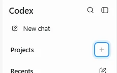
1 點圖放大 找到「專案／Projects」，按它右邊的 ＋。 接著會看到 會跳出「建立專案／Create project」視窗。
OpenAI 官方 Codex 練習畫面
在建立專案視窗選「本機（Local）」，再按「下一步（Next）」。
選本機，再按下一步 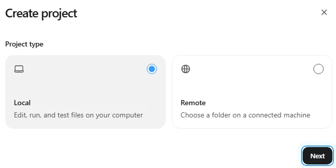
1 2 點圖放大 選「本機／Local」，這樣 Codex 才能用你電腦上的資料夾。 按右下角「下一步／Next」。 接著會看到 下一頁會出現專案名稱和來源資料夾。
OpenAI 官方 Codex 練習畫面
專案名稱填 ai-practice，按「加入資料夾」，選剛建的 ai-practice。
把空的 ai-practice 加進去 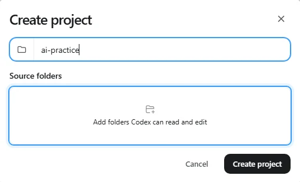
1 2 點圖放大 上方專案名稱填 ai-practice。 按「加入資料夾／Add folders」。視窗跳出後，進到「文件」，選剛建的 ai-practice，再按「選取資料夾」或「開啟」。 接著會看到 回到 Codex 後，來源資料夾會多出一筆。
OpenAI 官方 Codex 練習畫面
確認「來源資料夾」出現 ai-practice，再按「建立專案」。
核對來源資料夾，再建立專案 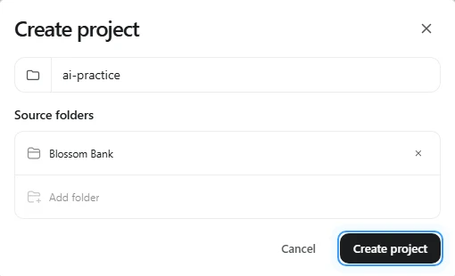
1 2 點圖放大 看「來源資料夾／Source folders」。圖裡是官方範例 Blossom Bank，你要看到的是 ai-practice。 確認後按「建立專案／Create project」。 接著會看到 左側的「專案」清單會出現 ai-practice。
OpenAI 官方 Codex 練習畫面
在左側找到 ai-practice，從這個專案開新聊天。
建立後，在左側找 ai-practice 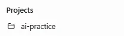
1 點圖放大 確認左側顯示 ai-practice。若畫面還在另一個聊天，從 ai-practice 開新聊天。 接著會看到 新聊天的輸入框附近會顯示所屬的資料夾。
OpenAI 官方 Codex 練習畫面
回到教材按「複製給 Codex」。把指令貼到聊天底部的輸入框，再按送出箭頭。
貼在底下的聊天輸入框 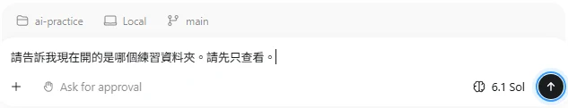
1 2 3 點圖放大 先看輸入框上方是否顯示 ai-practice。 把本關複製的文字貼到框裡。 按右下角的送出箭頭。 接著會看到 送出後，等 Codex 回覆目前的資料夾。回覆的路徑末尾應該是 ai-practice。
OpenAI 官方 Codex 練習畫面
Codex 回覆的路徑末尾應是 ai-practice。確認後，回教材勾兩件裝備並按「我做到了」。
團隊流程與補充 設定卡先填前三行就能開始第一堂，其餘欄位在接正式任務前補齊；IT 窗口、通知管道與時機一律以這張卡為準。Git 用來記錄修改，Node.js 用來跑本課程的小測試，版本依專案 README。Git 提交身分使用團隊認可的姓名與電郵。只有需要讓 Codex 從終端操作 GitHub 時才加裝 GitHub CLI，並以官方登入流程登入後核對帳號。Claude Code 等做到複核或設計時，再依團隊允許的帳號、方案與資料範圍安裝。憑證依團隊方式設定，練習一律使用假資料。
做到這裡，就可以往下 你已登入 Codex，它說出的資料夾名稱也跟你剛開的一樣。勾完耳機和鑰匙，關卡才會亮起完成按鈕。
把兩件裝備穿上 我做到了 我還沒做到
找不到「專案＋」？先確認目前是桌面 App 的 Codex 模式。Windows 可以按 Ctrl + O，Mac 按 Command + O，直接選「文件」下的 ai-practice。若結果不對，回到第 1 關第 5 步，核對來源資料夾。
你練會了這一步 你會確認 Codex 開對了資料夾。
前往第 2 關 第 2 關 / 12 · 開工 把工作方式告訴 Codex 小魔王 · 搶快怪 事情還沒說清楚，AI 就要動手。先跟它約好：看現況、等你開口，再開始改。
查小字典 · AI 助手 延續剛才 ai-practice 的 Codex 聊天，按「複製給 Codex」，把整段貼上。它會先看看目前有哪些檔案，再等你交代下一件事。
複製整段工作指令 貼到同一個 Codex 聊天 看 Codex 回報資料夾 常駐工作指令（整段貼給 Codex） 複製給 Codex
看完整內容 你是我的 AI 開發搭檔。用繁體中文協作，我負責需求、實際驗收與發布決定，你負責有授權的查找、修改、驗證與交接。
收到這段後，直接開始唯讀健檢。回報目前資料夾、Git remote（遮蔽憑證）、分支、工作區是否有未提交變更、讀到的 AGENTS.md 與 README，以及可用的啟動與驗證指令。若這裡沒有 Git 或專案，指出原因並建議最小下一步。這一步做完就等我指定第一張任務。
收到任務後：
1. 核對專案規則及 Issue。用一句話重述目標，寫下可觀察的驗收條件。需求明確就往下做。遇到會改變需求、權限不足或會覆蓋他人工作時，提出最需要我決定的一個問題。
2. 依專案規則確認 Issue 後，從最新指定基底建立對應分支。正式專案缺 Issue 時先擬草稿，收到建立授權才發到 GitHub。若團隊採工單分支規則，就從最新 origin/main 開 issue/<編號>-<短名稱>，優先使用獨立 worktree。
3. 涉及正式 UI、操作流程或使用者體驗時，先核對已有的確認稿。需要新稿時，準備交接給正確專案的本機 Claude Code，帶入共用產品體驗標準，取得可渲染稿與人員確認，再做正式實作。Claude 與 Codex 依序接手，同一時間只有一個人或工具寫入工作副本。
4. 維持小改動，沿用既有實作。執行與變更相稱的檢查，記下命令、結果、失敗或跳過原因。UI 依實際操作路徑驗收，使用測試或去識別資料。
5. 按授權與專案規則建立本機 commit，只納入本次檔案。回報 Issue、分支、commit、改動摘要、驗收結果和預覽證據。
6. 外部建立 Issue、push、開 PR、設為 Ready、外部通知、merge 與部署，依目前授權及專案規則辦理。沒有授權時只準備草稿。若團隊採預覽確認流程，push／開 PR 前先交預覽並取得對應確認，預設 Draft PR。檢查 PR head、CI、mergeability 及畫面證據，Ready 與通知 IT 依團隊流程。通知前核對對象、管道與內容，缺資料時先備通知稿。
7. 遇到錯誤先查原因並在授權內修復。使用官方登入流程，避免讀出或傳送密鑰及個資。交接時列出可重現證據和還需人員決定的事項。
任務格式：專案／Issue、我想改什麼、如何驗收、這次允許你做到哪一步。若我只提供目標，先查現況並在已授權範圍內推進。 之後交代任務的格式（貼給 Codex，先把括號換成你的內容） 複製給 Codex
看完整內容 專案／Issue：【填寫】
我想改什麼：【填寫】
如何驗收：【填寫】
這次允許你做到哪一步：只做到本機 commit 和預覽，外部操作等我指示。 照這個順序做 用第 1 關同一個聊天。圖片裡是第一關的文字，這次貼第二關的指令。
確認目前開的是練習資料夾。
把整段工作指令貼上。
貼在底下的聊天輸入框 1 2 3 點圖放大 先看輸入框上方是否顯示 ai-practice。 把本關複製的文字貼到框裡。 按右下角的送出箭頭。 接著會看到 送出後，等 Codex 回覆目前的資料夾。回覆的路徑末尾應該是 ai-practice。
OpenAI 官方 Codex 練習畫面
新開聊天時可以再貼一次。
團隊流程與補充 要長期沿用時，取得團隊同意後請 Codex 把共通規則併入專案適用的 AGENTS.md，並保留既有內容；之後開新聊天，驗證它能列出實際讀到的規則。專案名稱、授權範圍與 Issue 仍須逐次核對，不因寫進檔案就視為永久授權。分支、預覽確認與 Draft PR 規則依各專案的約定辦理。
做到這裡，就可以往下 Codex 說出目前的資料夾，回報現況後停下來等你。空資料夾沒有分支或檔案也正常。
我做到了 我還沒做到
如果它直接開始改檔，先停下來，請它只看資料夾和現況。
第 3 關 / 12 · 開工 先看一次搜尋為什麼失敗 大魔王 · 空白怪 打開正確的練習資料夾，讓 Codex 照你說的做，再把搜尋問題試出來。
查小字典 · 測試 繼續用第 1 關開的 ai-practice。這關才會用 Git 存一版、用 Node.js 跑測試。按「先檢查練習裝備」，請 Codex 看看兩樣能不能用。
從空資料夾開始 跑一次測試 一般搜尋成功，帶空白的搜尋失敗 看準備與安裝教學 Git 工具包｜用來存每次修改 為什麼要準備？ Git 像修改紀錄簿。你可以先存一版，再在自己的工作版本試改，之後也找得到改過什麼。
哪一關會用到？ 第 3 關先存搜尋練習的起始版本，第 5 關開分支時還會用到。
Windows 到 Git 官網下載安裝程式。公司電腦需要安裝權限時，請 Kevin 或 IT 協助。 裝完後重新開 PowerShell，輸入 git --version。也可以請 Codex 幫你檢查。 怎麼知道準備好了？ 看到 git version 和版本號，表示 Git 可以用。第 3 關第一次存版本時，再由 Codex 檢查這份練習的提交姓名。
Git for Windows 官方下載
可以請 Codex 先檢查，再協助安裝 Git 和設定這個練習專案的提交姓名。
請 Codex 帶我準備 Git（貼給 Codex） 複製給 Codex
看完整內容 先幫我跑 git --version，確認 Git 能不能用。需要安裝時，請依我的作業系統用 Git 官網建議的方式協助，先說明要做什麼。遇到安裝畫面或需要 IT 權限，請一次帶我做一步。完成後請重新開終端機驗證 git --version。若練習專案缺少提交姓名或電子郵件，請告訴我填在哪裡，並只在我確認後設定這個練習專案。 Node.js 電池｜讓 Codex 跑搜尋練習 為什麼要準備？ 這門課用 Node.js 跑搜尋練習。Codex 才能拿同一句話測兩次，讓你看到問題修好前後的差別。
哪一關會用到？ 第 3 關第一次跑搜尋測試，第 6 關修好後再跑一次。
先問 Kevin 這個專案要用哪一版 Node.js。單純做課堂練習時，可以從 Node.js 官網選 LTS 的 Windows 安裝程式。 裝完後重新開 PowerShell，輸入 node --version。若還是找不到，重開 Codex 或請 Kevin 一起看。 怎麼知道準備好了？ 先看到 v 開頭的版本號，表示電腦找得到 Node.js。到了搜尋關，再請 Codex 跑一次測試，就能看到修改前後的結果。
Node.js 官方下載
不知道怎麼裝？可以請 Codex 幫忙。公司電腦若需要管理員權限，請 Kevin 或 IT 協助。
請 Codex 幫我裝 Node.js（貼給 Codex） 複製給 Codex
看完整內容 請先在目前這台電腦檢查 node --version。如果已經裝好，而且版本符合這個專案的說明，直接告訴我結果。如果需要安裝，先幫我確認這個專案要用哪一版。單純做課堂練習、沒有指定版本時，可以用 Node.js 官網的長期支援版（LTS）。請說明打算怎麼裝，再協助我安裝。如果需要我點選安裝畫面或找 IT 開權限，請一次帶我做一步。裝好後請在新開的終端機再跑一次 node --version，把結果用白話告訴我。 先檢查練習裝備（貼給 Codex） 複製給 Codex
看完整內容 延續第 1 關在本機打開的 ai-practice。請先回報該資料夾名稱，檢查 git --version 和 node --version，用白話告訴我這關能不能開始。缺少工具時請指出缺哪一個，我會用教材裡該工具的安裝指令。如果是前次做到一半，請先辨認已建立的課程檔案並告訴我目前進度。先不刪改檔案。 建立練習小題（貼給 Codex） 複製給 Codex
看完整內容 我要做第 3 關的離線練習。請核對目前開的是第 1 關的空 ai-practice，或我明確選的空練習資料夾。用 Git 和 Node.js，不安裝套件、不連遠端。不在其他專案或正式系統裡動手。初始化本機 Git，初始分支 main。若缺提交身分，可只在這個練習專案設為姓名 Course Learner、信箱 learner@example.invalid；保留全機設定。建立 search.cjs，匯出 search(items, query)，用 items.filter(item => item.includes(query))。建立 search.test.cjs，用 Node 內建測試和兩筆假資料「程式入門」「進階程式」，檢查「入門」和「 入門 」都應找到「程式入門」。跑 node --test search.test.cjs，保留「一般輸入通過，前後有空白的輸入失敗」，只把 search.cjs 提交到 main，測試檔留到第 5 關。工單代號用 LOCAL-1。若已有這一關的檔案，先核對目前進度，沿用可用的成果。不要覆寫先前的修正或其他檔案。完成後用白話回報兩種輸入各找到什麼。 照這個順序做 先貼「先檢查練習裝備」。Git 或 Node.js 缺少時，展開安裝教學，把對應的指令貼給 Codex。
看到兩個版本號，再開始 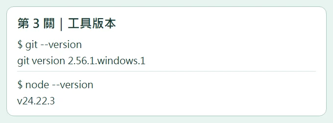
1 2 點圖放大 Git 會回覆 git version 和版本號。 Node.js 會回覆 v 開頭的版本號。 接著會看到 你的數字可能和圖不同。只要兩個工具都有回覆，就可以貼下一段指令。
本機練習實跑輸出節錄
看到兩個版本號後，貼「建立練習小題」。Codex 會在空資料夾放兩筆假資料和測試檔。
請它用白話說哪次找得到、哪次找不到。這一關先觀察問題，第 6 關再修。
一個通過、一個失敗 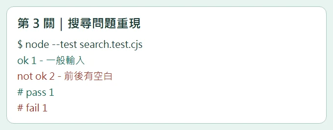
1 2 點圖放大 ok 1 是一般搜尋成功。 not ok 2 是帶空白的搜尋失敗。 接著會看到 這一關成功重現了問題。到第 6 關再修。
本機練習實跑輸出節錄
團隊流程與補充 這堂刻意先留下一個會失敗的測試，讓新人之後能示範「修改前失敗、修改後通過」。不要讓 Codex 在這一課就把它修好。練習不安裝任何套件，只用 Node 內建測試模組。LOCAL-1 是離線練習用的工單代號，正式流程改用實際 Issue 編號。
做到這裡，就可以往下 Codex 告訴你「入門」找得到「程式入門」，前後有空白時找不到。畫面會有 1 個測試通過、1 個失敗。
我做到了 我還沒做到
缺 Git 或 Node.js 的話，先開安裝教學。提示需要 Git 提交姓名時，請 Codex 只在 ai-practice 裡設定練習用姓名，再接著做。
★ ✦ ★ ✦ ★
★
大魔王退場！ 你會讓 AI 把問題做出來，親眼看到它怎麼出錯。
第一段｜讓 AI 聽懂你 打完這一段，你現在可以：
確認 Codex 開對資料夾 用一句話交代要看什麼 讓同一個問題再出現一次 下次遇到畫面怪怪的，你可以先把操作步驟和看到的結果寫下來。
前往第 4 關 第 4 關 / 12 · 第一張任務 寫一張隊友看得懂的工單 小魔王 · 霧霧怪 「搜尋怪怪的」到底是哪裡怪？寫出隊友照著做也看得見的問題。
查小字典 · Issue 繼續用 ai-practice 的搜尋例子。請 Codex 寫下你輸入什麼、發生什麼，以及修好會看到什麼。這張練習工單叫 LOCAL-1，先留在聊天裡。
寫下怎麼遇到問題 說清楚修好後的結果 請搭檔照草稿試一次 擬 Issue 草稿（貼給 Codex） 複製給 Codex
看完整內容 請擬一張 Issue。標題「搜尋忽略關鍵字前後空白」。現況：搜尋「 入門 」找不到「程式入門」。驗收：有無前後空白得到同一個結果，其他搜尋行為維持既有規則。列出重現步驟、影響與測試方式。只提供文字草稿，未經我同意不要發到 GitHub。 照這個順序做 請 Codex 擬工單（Issue）草稿。
工單寫到隊友能照著做 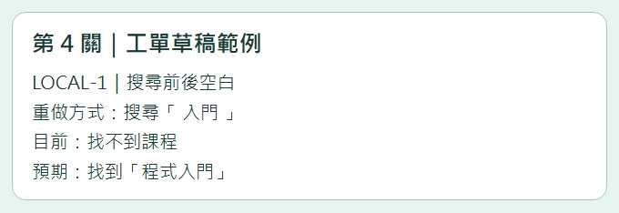
1 2 點圖放大 先寫要輸入什麼。 把實際和預期的結果各寫一行。 接著會看到 拿草稿從頭照做一次，就能確認寫得清不清楚。
依本機練習結果寫成的草稿範例
把草稿給搭檔看，確認他知道怎麼重現問題。
在本機練習用 LOCAL-1。有授權、也確認是練習專案時，才到 GitHub 開工單。
團隊流程與補充 好的 Issue 有三樣：可重現的步驟、可觀察的驗收條件、不在範圍內的事。建立 Issue 屬於外部操作，沒有授權時只備草稿。可以用 Issue 編號替 Codex 聊天命名，之後容易找回。
做到這裡，就可以往下 草稿寫出怎麼重做，也寫出「入門」前後有空白時應該找到什麼。可以自己照草稿試一遍，或請搭檔看一眼。
我做到了 我還沒做到
把「怪怪的」換成你實際輸入的文字和看到的畫面，再請 Codex 改寫。
第 5 關 / 12 · 第一張任務 開一個分支，放心試改 小魔王 · 手滑怪 怕一動手就改到大家用的版本？先開自己的工作版本，這次就有地方試改。
查小字典 · Branch 在第 3 關的 ai-practice 開一個自己的工作版本，也就是分支。把指令貼給 Codex，它會幫你開好。
從原本版本出發 開這次工單用的分支 確認測試檔還在 建立分支（貼給 Codex） 複製給 Codex
看完整內容 延續 ai-practice 的 LOCAL-1。請先核對工作資料夾、Git 目前的分支，以及第 3 關的 search.cjs 和尚未提交的 search.test.cjs。從本機 main 建立並切到 issue/local-1-trim-query，保留測試檔。如果這個分支已經存在，先確認是這份練習留下的再沿用。遇到其他人的檔案或資料夾對不上時，先說明現況。完成後用一句白話告訴我現在在哪個分支，以及測試檔是否還在。 照這個順序做 貼建立分支的指令。
請 Codex 指給你看目前在哪一個分支。
核對自己在哪條分支 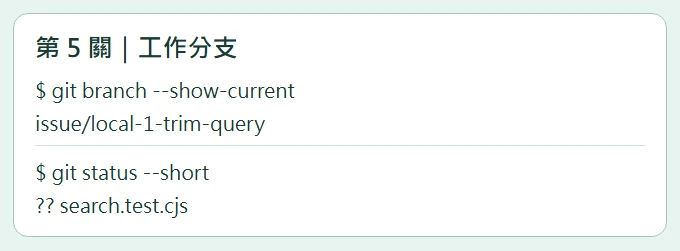
1 2 點圖放大 看第一段回報的分支名稱。 下面出現 search.test.cjs，代表測試檔還在。 接著會看到 名稱和圖裡相同，才接著在這個分支修搜尋。
本機練習實跑輸出節錄
看一下離線練習留下的測試檔還在不在。
團隊流程與補充 團隊規則示例：分支命名 issue/<Issue 編號>-<短名稱>，從 fetch 後的最新 origin/main 建立，優先使用獨立 worktree，避免和他人的修改混在同一個工作副本。工作區若有不屬於本次任務的修改，先問清楚是誰的，不要讓 Codex 自行還原或覆蓋。
做到這裡，就可以往下 在本機練習時，目前分支是 issue/local-1-trim-query，先前的測試檔也還在。正式專案以團隊約定為準。
我做到了 我還沒做到
如果分支名稱不對或測試檔不見了，先別動程式，請 Codex 說明現在在哪裡。
你練會了這一步 你會在自己的分支上修改，讓其他人保留原本的版本。
前往第 6 關 第 6 關 / 12 · 第一張任務 只改一處，看搜尋結果回來 大魔王 · 空白怪・再戰 用自己的工單分支修好搜尋。最後拿修改前後的結果比一比。
查小字典 · 重現 先重跑剛才失敗的測試，再讓 Codex 在搜尋前去掉關鍵字兩邊的空白。
先試｜找不到課程 只改搜尋前的空白 再試｜找得到程式入門 先重現失敗（貼給 Codex） 複製給 Codex
看完整內容 請執行 node --test search.test.cjs，用白話告訴我哪一項失敗、為什麼失敗。先不要修改任何檔案。 最小修改（貼給 Codex） 複製給 Codex
看完整內容 只在搜尋比對前處理 query 的前後空白。先檢查既有規則，尤其是空查詢，行為要維持不變。改完執行 node --test search.test.cjs，回報改了哪幾行，以及修改前失敗、修改後通過的測試輸出。不要為了通過而修改測試的預期結果。 卡住時（貼給 Codex） 複製給 Codex
看完整內容 測試還是失敗。請先找出原因再修，不要為了通過而改測試的預期結果，也不要擴大修改範圍。回報原因、修法和重跑後的結果。 照這個順序做 先貼「先重現失敗」，確認只有帶空白的搜尋找不到。
一個通過、一個失敗 1 2 點圖放大 ok 1 是一般搜尋成功。 not ok 2 是帶空白的搜尋失敗。 接著會看到 這一關成功重現了問題。到第 6 關再修。
本機練習實跑輸出節錄
接著貼「最小修改」。請 Codex 用同樣的兩個輸入再試。
用原本的測試再跑一次 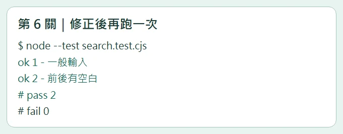
1 2 點圖放大 前後有空白這一項也變成 ok。 最下面的 fail 是 0。 接著會看到 兩種輸入應該都找得到同一門課。
本機練習實跑輸出節錄
團隊流程與補充 保留「搜尋失敗到通過」的完整過程，是這門課最重要的證據。需要第二雙眼睛時，到「Agent 分工」請本機 Claude 做唯讀複核，發現交回 Codex 查證。若任務擴大成正式畫面或操作流程的變更（例如重做搜尋介面），實作前先走支線：由本機 Claude 產出實際可渲染的設計稿，負責人打開稿件走一遍並確認，Codex 才接手實作，完成後逐項對稿。已有確認稿時，核對涵蓋範圍即可，不必重畫。
做到這裡，就可以往下 同一個帶空白的輸入，修改前測試失敗，修改後通過。一般搜尋也仍然通過。
我做到了 我還沒做到
結果還是對不上？貼「卡住時」，請 Codex 找出是哪項測試沒過。
★ ✦ ★ ✦ ★
★
大魔王退場！ 你會用 AI 修一個小問題，並用測試確認有修到。
第二段｜修好第一個問題 打完這一段，你現在可以：
寫一張隊友看得懂的工單 在自己的分支試改 用同一個輸入確認問題真的修好了 你可以接一張小工單，用 AI 改一處，再自己試一次。
前往第 7 關 第 7 關 / 12 · 第一張任務 自己試一次，再把這一版存好 小魔王 · 忘記怪 昨天改了哪一行，今天還找得到嗎？自己再試一次，把這版和結果留給明天的你。
查小字典 · Commit 第 3 關做的是搜尋程式，還沒有網頁。請 Codex 幫你跑第 6 關的兩個輸入，你只要核對結果，再把這次修改存一版。
照工單親手試 記下檢查結果 只存這次改的檔案 驗證並存檔（貼給 Codex） 複製給 Codex
看完整內容 延續 ai-practice 的 LOCAL-1。請幫我親手複驗的這一步：用假課程「程式入門」「進階程式」，把「入門」和「 入門 」分別送進 search.cjs 的搜尋函式，列出各自找到什麼。再跑 node --test search.test.cjs。兩次都找到「程式入門」且測試通過時，只將本題修改存成一筆本機 Git 紀錄。回報分支、版本、包含哪些檔案、以及可以重做這兩個檢查的方法。後續外部操作等我指示。 照這個順序做 讓 Codex 用「入門」和前後有空白的「入門」各找一次。
看到兩次都找到同一門課後，請 Codex 存好這次修改，告訴你改了哪些檔案。
存好後，找得到這一版 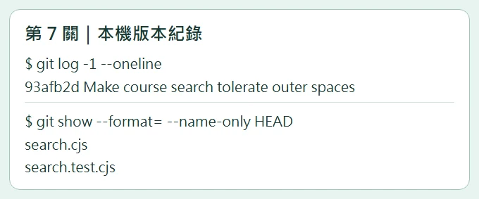
1 2 點圖放大 這一行開頭是版本代號。 下面是這一版包含的檔案。 接著會看到 把版本代號和測試結果留在聊天，下一關會用到。
本機練習實跑輸出節錄
團隊流程與補充 有介面時，用桌機和手機實際操作，留下看得到的畫面或影片。在採用此流程的專案，依變更範圍核對 lint、type-check、build、routing smoke 與實際操作，並把預覽連結或畫面、變更摘要、結果與未驗項目交給負責人。檢查沒跑就寫沒跑，不要寫成通過。
做到這裡，就可以往下 兩種輸入都找到「程式入門」，Codex 也說出這次存下的版本和檔案。
我做到了 我還沒做到
還有測試沒做或結果不確定？先把它列出來，請 Codex 告訴你下一步怎麼驗。
第 8 關 / 12 · 送審 開一張審查草稿 小魔王 · 亂麻怪 連結、畫面、測試散在各處。把它們放到同一份草稿，隊友就知道從哪裡看。
查小字典 · PR 先貼「備 PR 草稿」。只有本機 ai-practice 也能完成這關。Kevin 另外給你練習用的 GitHub 連結、確認可以送出時，再練真的開審查頁。
先把修改和測試寫成草稿 有練習連結和授權時，再送到 GitHub 看準備與安裝教學 GitHub 通行證｜走到送審再用 為什麼要準備？ GitHub 是團隊放程式和討論修改的地方。你想把修改交給隊友看時，會在這裡開一張審查草稿。
哪一關會用到？ 第 8 關要練真的把草稿送到 GitHub 時才需要。只在本機寫草稿，也能完成這關。
已有團隊帳號就直接登入。需要新帳號時，到 GitHub 註冊，並到信箱完成驗證。公司提供的受管理帳號，依公司流程辦理。 接受組織或練習專案的邀請，再打開 Kevin 給你的連結。可以看專案後，請 Kevin 核對你是否能開工單、推分支和開 PR。 怎麼知道準備好了？ 你用自己的帳號開得了練習專案。能開啟連結和能送出修改是兩件事，送出前還要確認權限。
GitHub 帳號註冊說明
Codex 可以帶你註冊、登入、確認邀請和找練習專案。帳號資料與驗證由你在 GitHub 畫面上自己操作。
請 Codex 帶我準備 GitHub（貼給 Codex） 複製給 Codex
看完整內容 請用一個步驟一句話，帶我準備 GitHub 帳號。先問我是否已有團隊提供的帳號。有帳號就指引我登入，沒有就指引我到 GitHub 官方註冊頁並驗證信箱。每一步等我描述看到的畫面再繼續。密碼、驗證碼或復原碼由我在 GitHub 頁面自行輸入。接著帶我接受團隊邀請、打開 Kevin 給的練習專案，並說明哪些寫入權限需要 Kevin 或 IT 確認。這一步只確認準備情況。 備 PR 草稿，不對外（貼給 Codex） 複製給 Codex
看完整內容 延續 ai-practice 的 LOCAL-1，請用剛才存下的版本和測試結果擬一張 Draft PR 草稿。用白話寫：改了什麼、用哪兩種輸入測過、結果如何、還有哪裡希望隊友幫忙確認。這是本機練習時，寫「LOCAL-1／尚未建立 GitHub 工單與審查頁」，沒有真實網址或線上檢查結果的地方就留待補。只輸出草稿，不要送到 GitHub。 其他指令與範本 取得授權後再貼｜先填專案網址和分支（貼給 Codex） 複製給 Codex
看完整內容 負責人已確認預覽，我授權在【填入練習專案網址】推送【填入分支】並建立 Draft PR。先核對目前的 GitHub 專案、分支、工單與確認過的 PR 內容。欄位沒填或資料對不上時停下來，告訴我哪裡不一致。完成後回報 PR 連結、目標分支、最新提交、檢查狀態、是否可合併，以及 PR 上的相關證據能不能打開。還在計算的項目標示待確認。 PR 內文範本 複製範本
看完整內容 關聯 Issue：Refs #<實際編號>
改了什麼：
使用者影響：
驗證結果與未驗項目：
驗收畫面與證據：逐項列出驗收條件、證據與對應提交
希望 Reviewer 幫忙確認： 照這個順序做 請 Codex 用 LOCAL-1 和第 7 關的版本寫草稿。只做本機練習，到這一步就可以確認完成。
先在聊天裡整理審查草稿 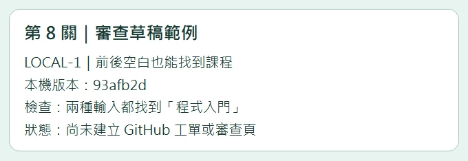
1 2 點圖放大 寫清楚你拿哪兩種輸入測過。 本機練習，狀態寫「尚未建立」，網址留待補。 接著會看到 草稿有改動、測試結果和狀態，就可以交給搭檔看。
依本機練習結果寫成的草稿範例
要真的送出時，先請 Kevin 核對練習連結、分支、預覽和授權，再用送出指令。
有授權才用 GitHub 的送審入口 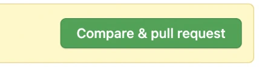
1 點圖放大 在授權的練習專案推送後，若看到提示列，按 Compare & pull request。 接著會看到 會開啟比較分支的頁面。先核對來源和目標分支、貼上草稿，再依團隊約定選擇建立 Draft PR。
GitHub 官方操作畫面
團隊流程與補充 團隊規則示例：push 與開 PR 前先交預覽並取得對應確認，預設 Draft PR，標題用 [issue/<編號>] <摘要>。是否可合併仍在計算時標待確認；有衝突先處理再重新驗證。合併後應結束工單時，依專案規則使用 Closes #<編號>，否則用 Refs。也可以用瀏覽器在 Pull requests 頁手動建立，重點是選對 base 與 compare。
做到這裡，就可以往下 你能從草稿看懂改了什麼、怎麼驗證，以及想請隊友看哪裡。正式送出的練習要再核對審查頁上的版本和測試。
我做到了 我還沒做到
還沒有 GitHub 權限或授權？做到草稿即可。請 Kevin 幫你核對要送到哪裡。
你練會了這一步 你會把修改整理成隊友看得懂的審查資料。
前往第 9 關 第 9 關 / 12 · 送審 請 IT 幫忙看一個重點 大魔王 · 亂麻王 把修改、測試和想請隊友看的問題放在一起，交出一份看得懂的審查資料。
查小字典 · GitHub 請 Codex 用上一關的草稿，寫一句想請隊友幫忙看的問題。只做本機練習時，註明「審查頁尚未建立」，通知稿留在聊天就好。
先寫要請隊友看的問題 有真的審查頁才補連結 請 Kevin 核對對象和管道 擬通知稿（貼給 Codex） 複製給 Codex
看完整內容 用剛才的審查草稿，幫我寫一則要請隊友或 IT 幫忙看的短訊息。寫清楚我改了什麼、測了什麼，以及想請他確認的一個問題，例如「搜尋框留空時，預期是顯示全部課程嗎？」本機練習就寫「LOCAL-1，審查頁尚未建立」。只有我給了真的 PR 或工單連結時才填網址。對象和通知管道留給我向 Kevin 確認，先不要送出。 通知訊息範本（自己填寫後送出） 複製範本
看完整內容 嗨【IT／Reviewer】，想請你協助審查【PR 連結】對應【Issue 連結】。這次讓搜尋忽略關鍵字前後空白，測試結果在 PR 的「驗證」段落。請協助確認空查詢行為是否符合目前規則。PR 目前為【Draft／Ready】，尚待【如實填寫】。方便的話請把意見留在 PR，謝謝。 照這個順序做 先貼擬通知稿的指令，看看隊友讀了知不知道要幫忙看什麼。
寫一句隊友能回答的問題 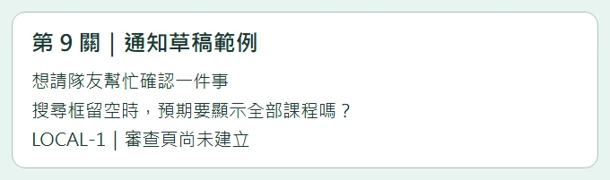
1 點圖放大 問一個具體的問題，例如搜尋框留空要看到什麼。 接著會看到 本機練習把草稿留在聊天。如果有真的審查頁，再補上連結。
依本機練習結果寫成的草稿範例
如果有審查頁，補上真實連結。要送出前，照團隊約定確認該找誰。
團隊流程與補充 轉為 Ready for review、指定 Reviewer 與發通知都是外部操作，依授權與團隊流程辦理；GitHub 上的指派和團隊通知各自依約定執行。團隊需要 IT 提前看 Draft 時，通知中寫清楚還在等哪些結果。合併與部署依團隊權限，不在新人練習範圍。畢業關卡三題：指得出修改在哪個分支、能示範失敗到通過、IT 一分鐘內知道要審什麼。
做到這裡，就可以往下 你有一則講清楚修改內容和審查問題的草稿。用本機小題練習時，寫「尚未建立審查頁」也算完成。
我做到了 我還沒做到
不知道找誰或何時通知？先把稿留著，請 Kevin 確認。
★ ✦ ★ ✦ ★
★
大魔王退場！ 你會請對方看一個具體問題，讓團隊往下接。
第三段｜把修改交給隊友 打完這一段，你現在可以：
存好一版修改，留得下測試紀錄 準備一張審查草稿 提出一個隊友能直接回答的問題 你可以帶著草稿和測試找 Kevin，依團隊流程把練習成果送審。
前往第 10 關 第 10 關 / 12 · 進階 先量一次，再決定值不值得改 小魔王 · 慢吞怪 改完覺得好像變快了？用同一份資料量兩次，再決定這一版要不要留。
查小字典 · 測試 這關還用 ai-practice。Codex 會拿同一份假資料量修改前後各花多久，你只要看數字和測試，再決定這一版要不要留。
先量修改前 改一處，跑測試 同樣方法再量一次 先量再改（貼給 Codex） 複製給 Codex
看完整內容 請在不改變行為的前提下優化 search.cjs，依序進行：
1. 先執行 node --test search.test.cjs，確認目前全數通過。
2. 建立量測腳本 bench.cjs：用固定產生的 10 萬筆假資料與同一個關鍵字，重複執行 search 多次，記下耗時的中位數，這是修改前的數字。
3. 找出最花時間的地方，提出一個最小的修改並說明理由，然後實作。
4. 用同一份資料、同一個方法再量一次，這是修改後的數字。
5. 再跑一次測試，確認全數通過。
回報修改前後的數字、量測方法、改動範圍。差異不明顯時如實說明，不要誇大。先不要 commit。 沒有進步就還原（貼給 Codex） 複製給 Codex
看完整內容 這次優化的前後差異不明顯。請只還原你在這次練習對 search.cjs 做的優化修改，保留既有變更，保留 bench.cjs，重跑 node --test search.test.cjs 確認通過，並用一句話記下這次量到的結果。 照這個順序做 貼「先量再改」。
對照前後數字和測試結果。
用同一個方法量前後 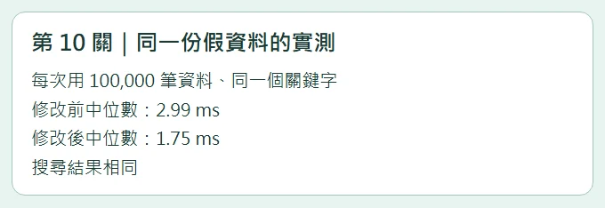
1 2 點圖放大 用同一份資料，比較修改前後的數字。 也要確認搜尋結果還是一樣。 接著會看到 你的時間可能和圖不同。差異不明顯時，保留原本的版本也可以。
本機練習實跑輸出節錄
沒有明顯改善時，可以請 Codex 只還原這次試改。
團隊流程與補充 可量測、行為不變是兩個硬條件：沒有修改前的數字就不算優化，測試沒過就不算完成。量測數字會隨電腦不同而變，教材與網站不要寫死任何成效數字，請新人回報自己量到的結果。這個小題的差異可能很小，重點是練習「先量再改」的順序，以及誠實回報。正式專案的優化同樣先開 Issue、開分支，並沿用專案既有的量測方式。
做到這裡，就可以往下 兩次數字用同一個方法量出來，測試也通過。差異不明顯，保留原本的版本也可以往下。
我做到了 我還沒做到
找不到修改前的數字？先補基準，再做下一次比較。
你練會了這一步 你會用實測結果決定要不要留下一項優化。
前往第 11 關 第 11 關 / 12 · 進階 從空資料夾做出一個小工具 小魔王 · 空白頁怪 資料夾空空的，從哪開始？先用假資料做出一個能打開、能搜尋的小工具。
查小字典 · README 這關才另開一個新的空資料夾，叫 my-first-tool。在 Codex 改開它，再請 Codex 做一個可以用瀏覽器打開的課程搜尋頁。
另建空的 my-first-tool 請 Codex 做出搜尋頁 打開它給的網址試一次 在新資料夾做搜尋頁（貼給 Codex） 複製給 Codex
看完整內容 這是第 11 關。請核對目前開的是新的空資料夾 my-first-tool（或我明確選的另一個空資料夾），不改前面做題的 ai-practice。用 Git 和 Node.js 內建功能做一個本機假資料的小工具，不安裝套件、不連遠端。建 main；若缺提交身分，只在這個練習專案使用 Course Learner 和 learner@example.invalid。建立 README.md、search.cjs、search.test.cjs、server.cjs 和有 start/test scripts 的 package.json。search(items, query) 忽略關鍵字前後空白，空查詢顯示全部。準備「程式入門」和另外兩筆假課程。網頁要有搜尋框和搜尋按鈕。請用內建 http 模組綁定 127.0.0.1，用 3000 或可用的本機埠。測試要涵蓋一般搜尋、前後有空白、空查詢。跑完測試並把小工具存成一筆本機 Git 紀錄，再協助啟動。把實際開啟網址、預期看到的頁面、停止方式寫清楚。如果是上次做到一半，先核對已有的本題檔案再接著做。 帶我把網頁打開並試一次（貼給 Codex） 複製給 Codex
看完整內容 我第一次用瀏覽器看自己做的程式。請幫我確認 my-first-tool 在本機已啟動，告訴我實際網址。一次只教我一步，等我回覆再繼續。先教我把網址貼到哪裡，再教我搜尋「入門」要看到「程式入門」，最後清空搜尋確認三筆課程都回來。也請告訴我怎麼關掉這次練習的程式。 照這個順序做 同第 1 關，在「文件」另建空的 my-first-tool。在 Codex 按 Ctrl + O（Mac 是 Command + O），選 my-first-tool，從這個專案開新聊天。
貼「在新資料夾做搜尋頁」，等 Codex 做好後，照它給的方式啟動。
把 Codex 給你的本機網址貼進瀏覽器。輸入「入門」，應該看到「程式入門」；把文字清空，三筆範例會回來。
打開自己的網頁，試搜一次 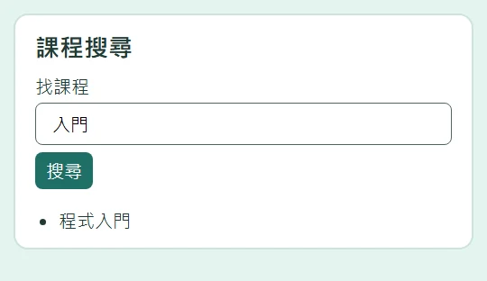
1 2 點圖放大 把 Codex 回報的本機網址貼到瀏覽器，再在搜尋框打「入門」。 按「搜尋」。 接著會看到 下面會看到「程式入門」。
本機練習網頁實際操作
把這個資料夾留著，第 12 關直接在這個搜尋頁加功能。
團隊流程與補充 可驗收路徑有兩條，缺一不可：測試（node --test）與真人操作（瀏覽器實際輸入）。這個小頁是練習用的工具頁，不是正式產品介面，可以直接做；若要把它變成給使用者的正式畫面，先由本機 Claude 產出可渲染設計稿並經負責人確認，再實作。資料一律用假資料。之後可以用這個專案重走一次 Issue 到 Draft PR 的流程；推送到 GitHub 屬於外部操作，需另外取得授權。
做到這裡，就可以往下 你能打開搜尋網頁、用「入門」找到「程式入門」，清空搜尋後也看得到三筆範例。Codex 回報測試通過。
我做到了 我還沒做到
如果打不開網頁，先問 Codex「程式還有開著嗎？我現在要開哪個網址？」也可以貼這關的「帶我把網頁打開並試一次」。
你練會了這一步 你會從一個想法做出看得到、試得了的小功能。
前往第 12 關 第 12 關 / 12 · 進階 把自己的點子加進剛做的工具 大魔王 · 漏看王 帶一個你想加進系統的功能。說清楚怎麼用、怎麼試，再找搭檔看一眼。
查小字典 · Agent 打開第 11 關的 my-first-tool，在原本的 Codex 聊天繼續。想好功能就用自己的點子。還沒想好，可以直接試「清除搜尋」按鈕。
說清楚想加什麼 做一小版，自己按一次 請搭檔看過，再整理結果 看準備與安裝教學 Claude Code 放大鏡 為什麼要準備？ 改完後想找另一雙眼睛看一遍，可以請 Claude 找出漏試的地方。要改正式畫面時，也可以先請它畫一份看得見的稿。
哪一關會用到？ 第 12 關練習交接和複核。要做正式畫面時，依團隊流程提早準備。
先確認團隊允許使用的 Claude 帳號和方案。依官方說明選你的作業系統安裝。 在第 11 關的 my-first-tool 打開終端機，輸入 claude，依畫面登入。請 Claude 說出目前的資料夾。 怎麼知道準備好了？ claude --version 顯示版本。登入後，Claude 能說出目前開的是第 11 關的 my-first-tool。
Claude Code 官方安裝與登入說明
Codex 可以先檢查、協助安裝，再陪你在 Claude 畫面上登入。
請 Codex 帶我準備 Claude Code（貼給 Codex） 複製給 Codex
看完整內容 先幫我檢查 claude --version。請提醒我確認團隊允許的 Claude 帳號和方案。還沒裝時，請依 Claude Code 官方手冊和我的作業系統協助安裝，先說明打算怎麼做。有需要我點選的安裝畫面時，請一次帶我做一步。接著請帶我在這個練習專案的終端機啟動 Claude Code，依官方畫面自行登入。密碼、驗證碼或金鑰由我在官方畫面自行操作。最後幫我確認版本，並教我請 Claude 回報目前的資料夾。 1｜說出我的點子（貼給 Codex） 複製給 Codex
看完整內容 我想在第 11 關的課程搜尋頁加一個「清除搜尋」按鈕。搜「入門」後點它，搜尋框要清空、三筆課程都要回來。請先用白話整理成一張本機練習工單：給誰用、要按什麼、按完看到什麼。先做草稿，讓我看懂再往下。 2｜做一小版，帶我試（貼給 Codex） 複製給 Codex
看完整內容 我已看過上一則功能工單，這次只在第 11 關的 my-first-tool 本機練習。請先核對正確的資料夾和目前狀態，從上一關存好的版本開一條練習分支，用假資料實作工單裡的一個功能。協助啟動小工具，把實際網址和「我按什麼、應該看到什麼」用白話告訴我。請等我親手試過，再整理修改前後的畫面和測試結果。本機練習可直接做；如果我日後要改正式系統的畫面，會先依團隊流程取得設計確認。這次不碰正式系統或 GitHub。 3｜整理給搭檔看的資料（貼給 Codex） 複製給 Codex
看完整內容 我已試過第 12 關的小功能。請先問我按了什麼、畫面變成什麼，有兩種結果時分開記。再整理一張交接單：小功能的工單、練習資料夾與分支、怎麼打開、可以重做的操作、預期結果、已跑的測試，以及希望 Claude 或同事幫忙看的一個問題。如果有人回報問題，等我貼回來再查證和重跑測試。現階段 Codex 負責改檔，搭檔只看並提出意見。只用假資料，不對外送出。 唯讀複核（貼給本機 Claude Code，後面附上交棒單） 複製給 Claude
看完整內容 請先回覆實際工作目錄、分支與已讀專案規則。這次只做唯讀複核：不要修改、建立或刪除任何檔案，也不要執行會改變工作區的指令。審查這次 Issue 的差異及測試，留意尚未涵蓋的輸入和可能改變的行為。每個發現附檔案位置、觀察依據及最小檢查方式，讓 Codex 複核。看完本次差異與測試就停下，輸出發現清單；沒有發現也請明說。
交棒單：
【貼上 Codex 準備的交棒單】 交回 Codex 查證（貼給 Codex，後面附上發現清單） 複製給 Codex
看完整內容 以下是本機 Claude 的唯讀複核結果。請逐項查證：成立的，說明依據並做最小修改、補上對應測試、重跑相關檢查；不成立的，說明原因。只處理本次 Issue 範圍內的項目，範圍外的列為後續建議。
複核結果：
【貼上 Claude 的發現清單】 其他指令與範本 正式畫面變更：請 Claude 先畫稿（貼給本機 Claude Code） 複製給 Claude
看完整內容 請先回覆目前目錄、分支、Issue、已讀的共用產品體驗標準與產出位置。沿用專案既有的品牌規範、設計 tokens 與正式元件，做一份實際可渲染的設計稿，呈現桌機與手機，以及輸入、結果、空結果、錯誤等適用狀態，使用假資料。這階段只寫入設計稿與指定產物，不修改正式程式。完成後告訴我怎麼打開稿件，並列出需要負責人確認的事項。找不到共用標準時請停下來告訴我，不要自行假設。 進階｜在 Codex 專案內試一次 Agent 分工 複製範本
看完整內容 如果這個 Codex 環境支援子 Agent，我授權開一個唯讀子 Agent，獨立確認這次修改與既有測試有沒有漏掉重要情境。請給它專案路徑、工單、分支、要看的差異與驗收條件。它只回報檔案、依據和測試建議，完成一次複核就停。你是唯一能寫入程式的 Agent，收到結果後請查證並回報。若沒有子 Agent 功能，請輸出同樣的交棒單，我會把它貼給本機 Claude Code。 照這個順序做 先貼「1｜說出我的點子」。有自己的點子，可以把範例那句換成你想要的效果。
看完 Codex 整理的工單，貼「2｜做一小版，帶我試」。用它給的本機網址，親手按一次。
改好後，試按「清除搜尋」 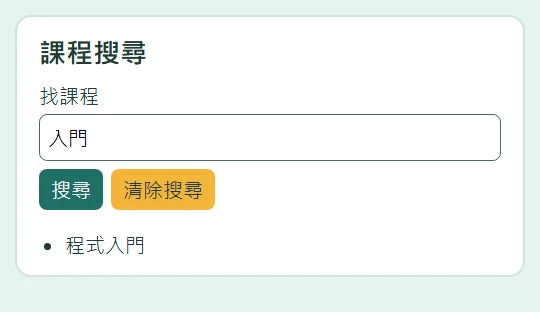
1 點圖放大 先搜尋「入門」，再按新加的「清除搜尋」。 接著會看到 按下後，搜尋框會清空，三筆課程會回來。可以對照下一張圖。
本機練習網頁實際操作
搜尋框清空，三筆課程回來 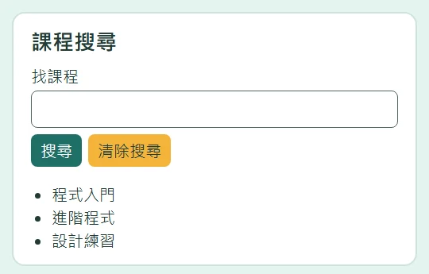
1 2 點圖放大 搜尋框沒有字。 三筆課程都回來了。 接著會看到 如果這是工單裡約好的結果，這一版就可以整理給搭檔。
本機練習網頁實際操作
試完再貼「3｜整理給搭檔看的資料」。讓 Claude 或一位夥伴照步驟試，最後把結果交回 Codex。
團隊流程與補充 手動交棒（複製貼上）就足夠，不需要自動串接；沒有需求來源的自動化不要先做。分工原則：Codex 負責實作、實測與存檔，Claude 的複核與設計提案分開記錄，分歧與不採用的原因也留下。正式 UI 的順序固定為：Claude 產出實際可渲染稿、負責人打開確認、Codex 才實作、最後逐項對稿。設計稿的進階內容依共用產品體驗標準補齊：利害關係人關係圖（區分已確認與待確認角色）、自動化泳道圖（全自動、半自動、人工）、畫面故事板、情境腳本與測試覆蓋矩陣（測試層、斷言、假資料、證據與人工驗收責任），並說明希克、峰終、雅各布、預設效應、損失規避五項原則的適用判斷與覆蓋範圍。設計階段只能說「測試已規劃」，有執行證據才說「通過」。Claude 可使用的資料範圍與共用標準的位置，以團隊設定卡為準；尚未收到 Claude 回覆確認前，交接標為待完成。
做到這裡，就可以往下 你在第 11 關的工具上做出一個新功能，也能說出「我按了什麼、結果變成什麼」。例如按下「清除搜尋」，搜尋框清空，三筆課程都回來了。留下網址、操作步驟和結果給搭檔。
我的功能做到這裡了 我做到了 我還沒做到
還在想功能就先用「清除搜尋」範例。網頁打不開時，請 Codex 啟動 my-first-tool 並重報網址。還沒準備 Claude 時，可以請一位夥伴照步驟試一次。
★ ✦ ★ ✦ ★
★
12 關完成！ 你會把 AI 做出的修改交給另一雙眼睛檢查，再帶著證據和團隊討論怎麼加入系統。
第四段｜做出自己的小功能 打完這一段，你現在可以：
用同一個方法比較改前改後 從空資料夾做出可操作的小工具 分工複核並提出自己的功能工單 你可以把小版本、畫面和測試交給團隊，一起確認怎麼加進正式系統。
想把自己的點子加進團隊系統？把工單草稿、修改前後的畫面與測試結果交給 Kevin，和團隊確認怎麼審查與合併。
回到闖關首頁